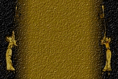

Broken Sword - The Shadow of the Templars (Europe) (En,Fr,De,Es,It)
EEPROM 64K 💾 MultiBoot
Cartridge Identity
- Game Code
ABJP(FamilyABJ)- Header Title
BROKENSWORD- Maker / Revision
6L/ rev0- ROM Size
- 8.0 MiB (8,388,608 B)
- Save Media
EEPROM 64K- SHA-256
19bd3c7d2bb8d58c208cd3895d8b3a5a04682b419e893d4968dbafe612165002- Engine / SDK Group
comm-002(145 families)
Screenshots

Link Cable & Multiplayer Communications
This title contains detected communication capabilities: 💾 MultiBoot.
Detailed protocol specifications, SIO registers, Joybus commands, and MultiBoot sequences are documented in the Link & Multiplayer Reference.
- Single-Cart MultiBoot
- Single-Cartridge MultiBoot (Download Play) client/server handler · Thumb SWI 0x25 (
0xDF25):0x034884,0x04470c,0x069218,0x1097e0
Observed Battery Save Layout
- Fill Byte & Active Size
0xFFfill · 2,112–2,112 / 8,192 B active (entropy 3.15 bits/B)- Active Offset Ranges
0x0–0x17,0x800–0x817,0x1000–0x1017,0x1800–0x1807,0x1810–0x1FFF(5 total)- ASCII Magic / Headers
SNEKORBi- Observed Variable Regions
- 0 bytes across 0 spans: None
- Candidate Checksum/Counter Spans
- None
Text, Fonts & Scene Data
- Primary Text Encoding
- Plain ASCII (uncompressed) (
104ASCII strings ·5LZ77 ASCII blocks) - Font & VWF Indicators
- VWF Width Table 1bpp Font · BIOS SWIs: BitUnPack
0x10:50· LZ770x11/12:61· Huffman0x13:11· RLE0x14/15:33 - Scene & Packaging
4ROM pointer tables (≥32 entries,1≥200) ·221relativeu32TOCs ·174OAM metasprite hits · FourCC:TEXT
Hardware MMIO Subsystems
ppu_display0x8000294,0x8000924